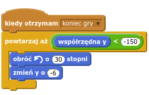

Wstęp
Udało mi się dokończyć grę z przygodami nietoperza, ale niestety, jakiś złośliwy wirus ją popsuł. Niektóre bloki w skryptach zniknęły, inne zmieniły miejsce albo mają powpisywane w okienka złe liczby. Pomóżcie mi ją naprawić!
Krok 1: Remiksujemy projekt
Zadania do wykonania
Upewnij się, że umiesz otwierać linki w osobnym oknie lub karcie. Następnie otwórz w nowym oknie lub nowej karcie następujący projekt:
https://scratch.mit.edu/projects/129021958/Zajrzyj do środka projektu.
Zaloguj się do scratcha, jeśli jeszcze tego nie zrobiłeś. Bez tego nie będziesz mógł zremiksować projektu.
Naciśnij żółty przycisk
Remix, na górze z prawej strony.
Świetnie! Kopia projektu jest już na Twoim koncie.
Krok 2: Naprawiamy nietoperza
Nietoperz jest odwrócony tyłem do kierunku lotu a do tego zamiast spadać unosi się w górę. Spróbuj to naprawić.
Zadania do wykonania
Odwróć nietoperza przodem do kierunku lotu. Wskazówka: zajrzyj do zakładki ‘Kostiumy’.
Popraw błąd w skrypcie nietoperza tak, żeby nietoperz spadał zamiast się wznosić.
Teraz nietoperz jest skierowany w dobrą stronę i powoli spada.
Niestety, po machnięciu skrzydłami nietoperz wznosi się bardzo powoli. Ciężko będzie złapać wyżej lecące balony albo uciec przed duchami.
Poza tym, po pierwszym machnięciu skrzydła nietoperza pozostają opuszczone.
Zadania do wykonania
Spraw, żeby nietoperz wznosił się szybciej.
Spraw, żeby po machnięciu nietoperz unosił z powrotem skrzydła.
Zapisz swój projekt
Krok 3: Naprawiamy balony
Gdzie się podziały balony? Pojawił się tylko jeden. W dodatku balon nie znika, gdy złapie go nietoperz.
Zadania do wykonania
Napraw skypt balonów tak, żeby po pierwszym pojawiały się kolejne.
Spraw, żeby balony znikały gdy nietoperz je złapie.
Zauważ, że nowe balony nie pojawiają się przy prawej krawędzi, tylko bliżej środka. Napraw to.
Nowe balony pojawiają się zawsze na górnej połowie ekranu. Zrób tak, żeby czasami pojawiały się też na dolnej połowie.
Zapisz swój projekt
Krok 4: Naprawiamy liczenie punktów
Zauważ, że w górnym lewym rogu ekranu jest wyświetlona zmienna punkty. Ale liczenie punktów nie działa jak powinno.
Zadania do wykonania
Po złapaniu balona licznik punktów powinien się zwiększyć. Zamiast tego, pokazuje
1.Jeśli nietoperz nie złapie balona, to powinien tracić punkty, a nie zyskiwać nowe.
Po rozpoczęciu nowej gry, licznik punktów powinien być wyzerowany.
Zapisz swój projekt
Krok 5: Naprawiamy duchy
A gdzie się podziały duchy?
Zadania do wykonania
Spraw, żeby duchy się pojawiały. Wskazówka: wstaw blok
pokażw odpowiednie miejsce skryptu ducha.O rety, ten duch jest strasznie wielki! Trudno go ominąć. Zmniejsz ducha.
Zauważ, że duch nie znika zupełnie, gdy dociera do lewej strony ekranu. Jak to naprawić?
Jest tylko jeden duch. Spraw, żeby pojawiały się następne.
Duchy pojawiają się zawsze w połowie wysokości ekranu. Ciekawiej będzie, jeśli będą pojawiać się na różnej wysokości, tak jak baloniki.
Dlaczego gra się nie kończy, kiedy duch łapie nietoperza?
Zapisz swój projekt
Krok 6: Dodatki
Zadania do wykonania
Wyświetl końcowy napis „Game Over”. Skrypt napisu jest już gotowy, brakuje tylko jednego elementu. Wskazówka: jakie zdarzenie powinno wyświetlać napis?
Dodaj następujące bloki do skryptu nietoperza:

Wyzwanie
Żeby gra była ciekawsza, spraw, żeby duchy robiły się coraz większe w miarę jak gracz zdobywa punkty. Wskazówka: użyj następujących bloków: